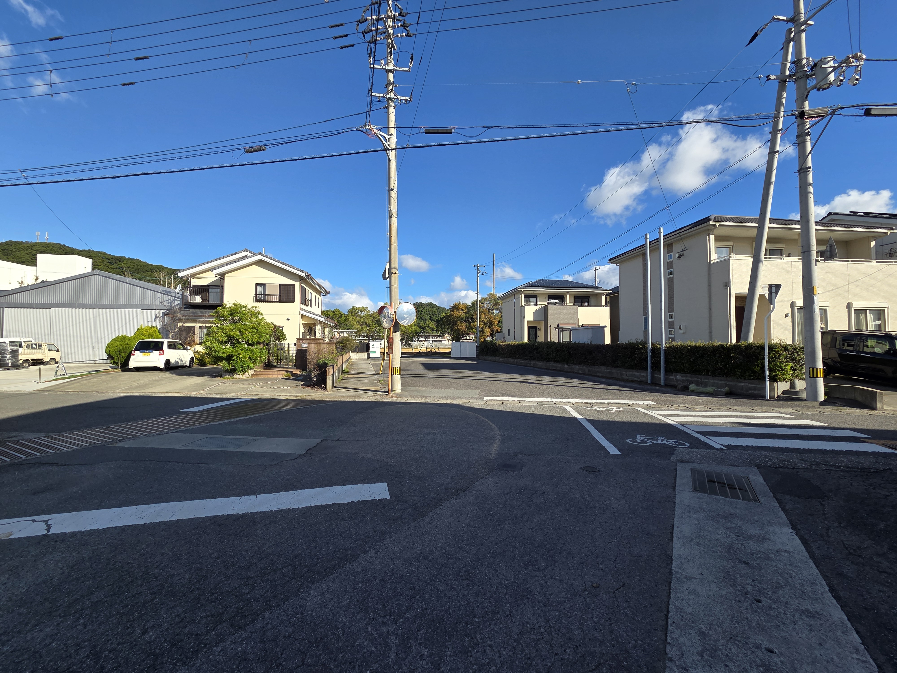
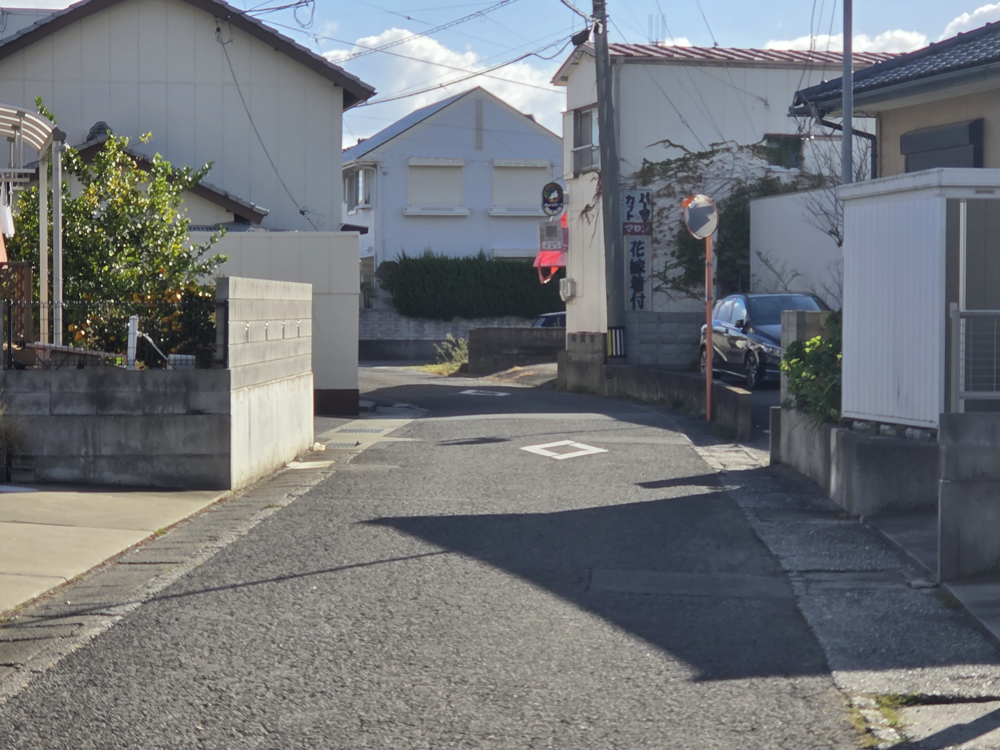
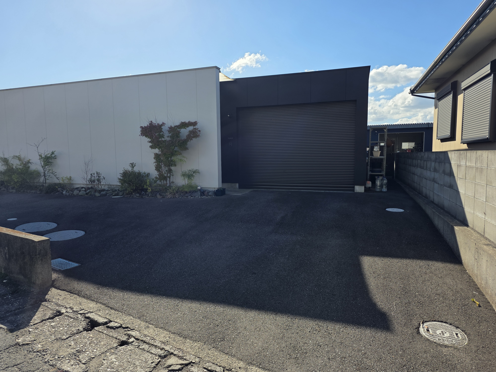
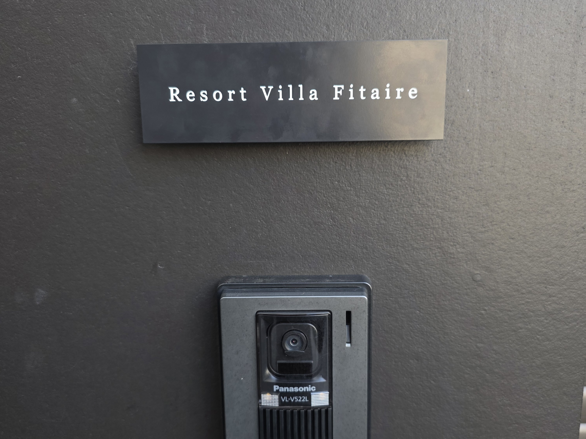
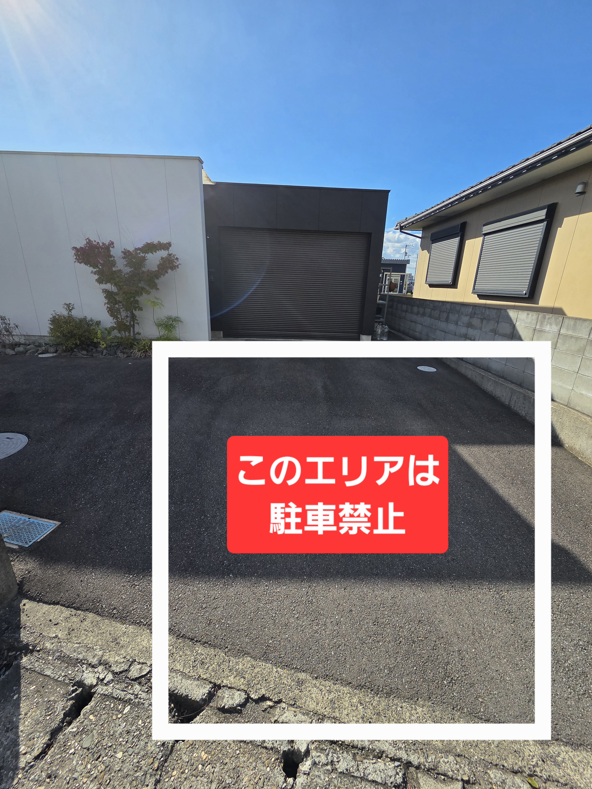
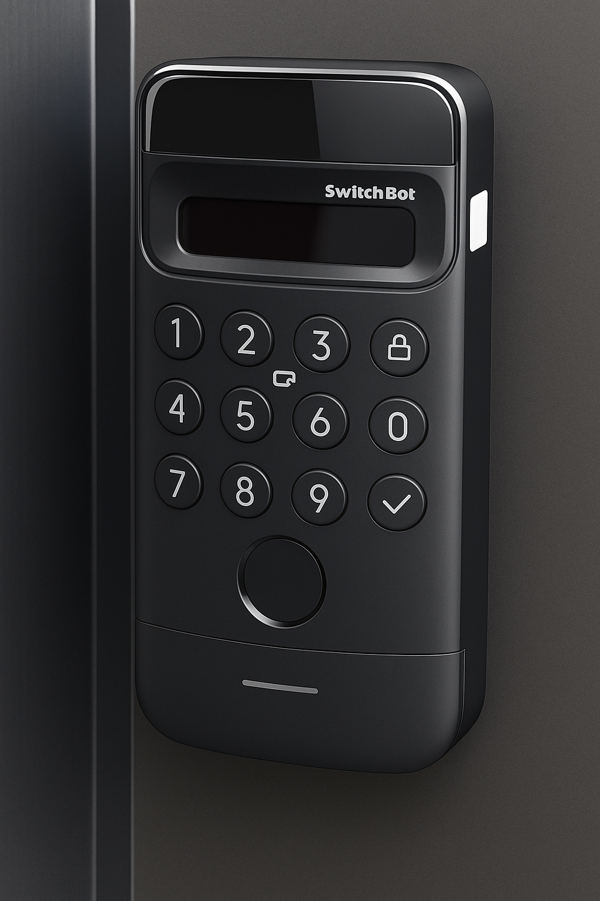
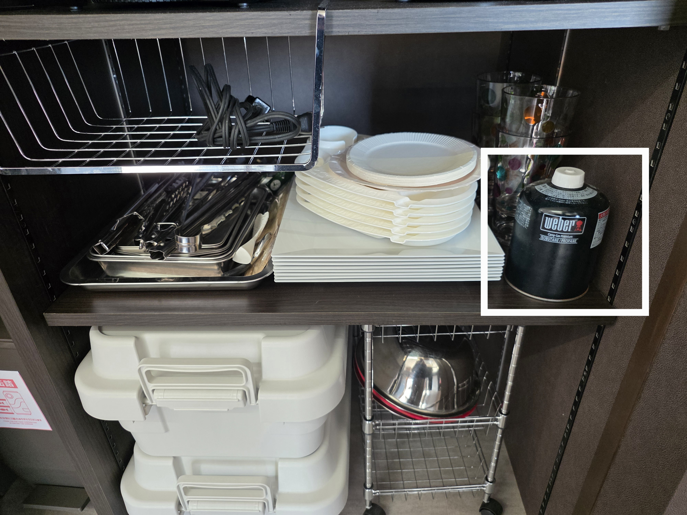

欢迎来到 Fitaire in Naruto
本页面仅供入住本民宿的客人查阅，请勿在网络等处转载或公开。
交通·到达方式
自驾前来时，请从神户淡路鸣门自动车道的「鸣门北 IC」或「鸣门 IC」下高速，约15 分钟即可到达。
建议将「鸣门第二中学」设为导航目标，沿着前往学校的道路行驶。
由于夜间路灯较少，部分路段较暗，请结合下方照片确认路线。




也可以在 Google 地图中搜索地址 “徳島県鳴門市里浦町里浦字花面７０４−２” 直接导航。
停车场使用说明
请务必停在指定区域内。
深夜与清晨出入库时，请尽量保持安静，避免打扰邻居。
- 可停 2 台车（如为小型车，紧凑停放最多可停 3 台）。
- 禁止停在划线区域以外，也禁止路边停车。
- 照片中红色标记区域严禁停车，房东可能需要出入车库。


入住方法（数字按键智能门锁）
- 请先找到外门旁的数字按键智能门锁。
- 输入我们在入住前一天发送给您的 6 位数密码。
- 输入完成后，按下✓ 按键即可开锁。
- 外玄关与内玄关联动，外门解锁时，内门也会同时解锁。
- 约2 分钟后会自动上锁，外出时请再次确认门已锁好。
如遇无法开锁或设备故障：请立即联系房东。TEL：080-5312-8677

🇯🇵 住宿规则（Fitaire in Naruto）
1. 入住与退房时间
- 入住时间：15:00 以后
- 退房时间：11:00 之前
2. 室内使用注意事项
- 进入玄关后，请脱鞋并换穿室内拖鞋。
- 住宿期间请注意不要打扰附近住户， 22:00 以后请降低说话声、电视和音乐音量。
- 请爱护室内家具、家电及各类设备。若因损坏、呕吐等造成严重污损，可能会按实际清洁·修理费用收取赔偿金。
3. 禁止事项
- 室内及阳台原则上全面禁烟。
- 如需吸烟，请仅在室外进行，并使用随身烟灰缸，务必彻底熄灭烟头。
- 除非事先得到允许，禁止携带宠物。
- 禁止未登记入住的人员入内或留宿，禁止举办派对、活动等。
- 禁止超出预订人数入住，请按照预订时申报人数使用。
4. 设备与共用区域使用
- 厨房、炊具、餐具等使用后请清洗干净并放回原位。
- 垃圾请按以下方式分类：可燃垃圾·不可燃垃圾·塑料瓶归为一类，玻璃瓶与罐头分开另行丢弃，投放至指定垃圾桶。
- 外出时请关闭灯具、空调、地暖、电视等电器，并确认门窗已锁好。
5. 其他说明
- 车库区域为房东存放物品区域，房东可能会根据需要进出，但不会进入客人使用的起居空间或庭院。
超过 11:00 退房可能会产生额外费用，敬请理解。
连住客人须知
- 住宿期间不提供中途清扫服务。如需打扫，可使用内玄关旁拖鞋架下方的吸尘器。
- 床上用品及毛巾等不做更换，敬请谅解。
- 如需洗衣，可使用室内的洗衣机和洗涤剂，也可前往附近自助洗衣店。
- 垃圾桶装满时，请用洗手池下方预备的垃圾袋更换。
附近自助洗衣店
- Coin Laundry 新洗藏 Power City 店
德岛县鸣门市撫养町大桑岛字濘岩浜4-1／营业时间：5:00–22:00 - Coin Laundry Avance Hello's 鸣门店
德岛县鸣门市大津町吉永438-1／营业时间：24 小时营业 - ウチノ海 Coin Laundry 立岩店
德岛县鸣门市撫养町立岩七枚142／营业时间：6:00–22:00
其他注意事项
- 卫生纸、纸巾、清洁剂等消耗品会根据住宿天数备足。
- 如发现家电或设备故障，请勿自行拆修，请联系房东处理。
WEBER Traveler 燃气烧烤炉使用方法
烧烤炉已展开就绪。请仅在室外使用。
燃气罐存放位置
燃气罐存放在室内指定收纳位置。使用时请取出一罐，使用结束后务必放回原处。

燃料与安全注意
- 燃料：EN417 规格螺纹式燃气罐（约 470g）。
- 周围 60cm 范围内请勿放置易燃物。
- 务必在通风良好的室外使用，点火后请勿移动烧烤炉。
1. 事前准备（连接燃气罐）
- 确认旋钮处于“OFF”，调压阀为关闭状态。
- 将燃气罐用手旋紧连接到调压阀（不要使用工具）。
- 打开调压阀，在连接处涂抹肥皂水，确认无气泡产生。
若出现气泡，则表示有漏气，请立即关闭阀门，重新连接并再次确认，若仍有漏气，请停止使用。
2. 预热
- 打开盖子，按下一章节步骤点火。
- 盖上盖子，旋到“High”档，预热10–15 分钟（温度计约 260℃ 为参考）。
- 预热完成后，用不锈钢烤网刷简单刷净烤网。
3. 点火步骤
- 打开盖子。
- 确认旋钮在“OFF”位置。
- 打开调压阀。
- 按下旋钮并逆时针旋转至“Start/High”位置。
- 多次按下红色点火按钮（听到咔嗒声）。
- 若 5 秒内未点燃，请将旋钮转回 OFF，等待 5 分钟通风后再尝试。
如多次点火失败，请参考说明书中的火柴点火方式或故障排查，如仍有疑问，请停止使用。
4. 熄火与整理
- 将旋钮转至“OFF”。
- 关闭调压阀。
- 完全冷却后，检查接油盘的油量并清理。
- 长时间不使用或移动时，请取下燃气罐并放置在室外。
清洁方法
使用后可先稍微加热，再用刷子轻刷烤网，并检查接油盘，及时倒掉多余油脂。
📄 更多详细信息请参考官方说明书（PDF）：
WEBER Traveler 使用说明书（PDF）
周边观光与美食指南
🚗 1. 主要观光景点
- 鸣门漩涡（大鸣门桥） – 车程约 10 分钟。世界级大漩涡，可乘观潮船近距离观赏。
- 大冢国际美术馆 – 约 15 分钟。以陶板名画闻名的世界级美术馆，全封闭全天候参观。
- 鸣门公园·Eddy 观光物产馆 – 约 10 分钟。展望台景色绝佳，特产与伴手礼丰富。
- 鸣门内海综合公园 – 约 8 分钟。大草坪和游乐设施，非常适合亲子出游。
- 道之驿·涡潮 – 约 20 分钟。景色优美，当地汉堡非常有人气。
- 阿波舞会馆（德岛市） – 约 40 分钟。全年可体验阿波舞，夜间公演也很受欢迎。
- あすたむらんど德岛 – 约 45 分钟。以科学体验为主题的乐园，适合带小朋友。
- 祖谷葛藤桥 – 约 1 小时 50 分钟。传统藤条吊桥，颇具刺激感的名胜。
- 道之驿·くるくるなると – 约 12 分钟。贩售当地蔬菜、水果与特产的休息站。
- あいさい广场（藍住町） – 约 35 分钟。德岛最大级的农产品直销市场。
- じゃのひれ户外度假区（淡路岛） – 约 50 分钟。可体验钓鱼、与海豚互动等活动。
🍜 2. 推荐美食
- びんび家 – 约 10 分钟。鸣门海鲜盖饭代名词，经常需要排队。
- うずの丘餐厅 – 约 20 分钟。可眺望海景，淡路岛洋葱汉堡有名。
- 鸣门地区批发市场（市场食堂） – 约 8 分钟。早晨也适合前往的海鲜食堂。
- 喫茶あぽろ – 约 7 分钟。复古咖啡馆，自制司康颇受欢迎。
- うな哲 – 约 10 分钟。当地评价很高的鳗鱼专门店。
- 堂の浦 鸣门本店 – 约 10 分钟。以鲷鱼高汤拉面闻名，艺人也曾到访。
- あらし – 约 12 分钟。本地人气定食店，盖饭种类丰富。
- 上海料理 富々樓 – 约 10 分钟。本格中餐厅，在地评价很好。
- すし勝 – 约 10 分钟。鸣门屈指可数的寿司店，建议提前预约。
- 三八拉面 – 在多处分店，可品尝经典德岛拉面。
- Ristorante Fishbone – 约 15 分钟。可眺望大海的意大利餐厅，适合纪念日或午餐。
🚙 3. 交通·出行
- 租车：鸣门站、德岛机场附近设有多家租车公司（丰田、日产、Niconico 等）。
- 出租车：鸣门第一出租车 – 088-685-5555
🛍️ 4. 推荐伴手礼
- 鸣门金时地瓜点心（如栗尾商店等）
- 鸣门若布海带
- 大谷烧陶瓷（也可体验陶艺制作）
- 鸣门鲷鱼、柚子醋（すだち）相关制品
- ことらや（以鸣门金时与若布制作的和菓子很有人气）
🌸 5. 季节性活动
- 春季（3–5 月） – 鸣门漩涡最壮观的季节。
- 夏季（7–8 月） – 鸣门市纳凉烟花大会，在内海附近举办。
- 秋季（9–11 月） – 可体验鸣门金时地瓜采收活动。
- 冬季（12–2 月） – 大鸣门桥及周边点灯，夜景浪漫。
💬 6. 来自房东的一句话
鸣门集自然、艺术、美食于一体，是一座充满魅力的小城。希望您在这里慢慢享受时光，找到属于自己的心仪景点。
📱 方便链接
退房须知
- 退房时间为11:00，若超过时间可能会收取额外费用。
- 如使用过 WEBER 烧烤炉，请：
- 简单刷净烤网上残留食物，检查接油盘并清理。
- 关闭燃气阀门，取下燃气罐并放回室内指定位置。
- 使用过的餐具、锅具等请清洗干净并放回原位。
- 请关闭所有空调、地暖、照明及其他电器。
- 离开前请再次确认门窗已关闭并锁好。
若在离开前发现明显损坏或故障，如方便请告知房东，以便尽快为下一位客人做准备。